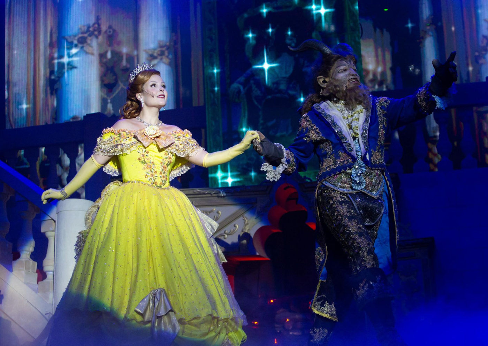

Foto — Bianca Tatamyia
Teatro
“A Bela e a Fera – O Musical” retorna em temporada especial de férias no Teatro B32
Montagem dirigida por Billy Bond reestreia em São Paulo a partir de 5 de julho, com sessões aos fins de semana. Superprodução conta com mais de 100 figurinos, e…